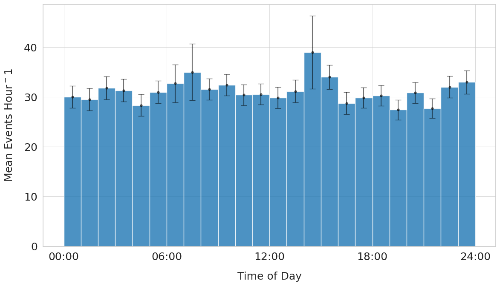
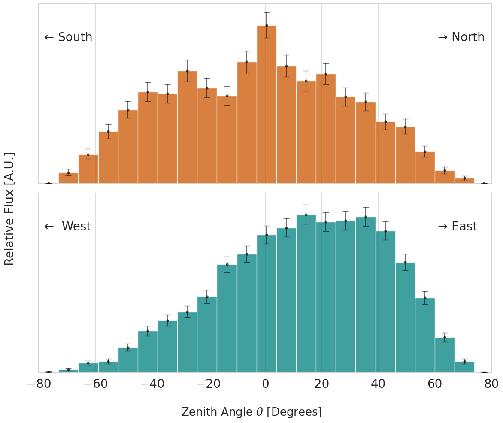

Rates & Angles#
from config.settings import LocalDataPath, OutPath, PlotsPath
from config.plot_config import set_plot_style; set_plot_style()
from utils.functions import gaussian
import os
import numpy as np
import matplotlib.pyplot as plt
from prettytable import PrettyTable
import pickle
import seaborn as sns
import math
from scipy.optimize import curve_fit
#plot params
label_fontsize = 20
plt.rcParams["xtick.labelsize"] = label_fontsize
plt.rcParams["ytick.labelsize"] = label_fontsize
with open(f"{OutPath}/run_TLV.pkl", "rb") as f:
run_TLV = pickle.load(f)
with open(f"{OutPath}/run_SN.pkl", "rb") as f:
run_SN = pickle.load(f)
with open(f"{OutPath}/run_WE.pkl", "rb") as f:
run_WE = pickle.load(f)
# Gather Data
data_TLV = run_TLV.get_data()
data_SN = run_SN.get_data()
data_WE = run_WE.get_data()
# Timestamps
timestamps_TLV = np.array([tup[0] for tup in data_TLV])
timestamps_SN = np.array([tup[0] for tup in data_SN])
timestamps_WE = np.array([tup[0] for tup in data_WE])
# Angles, with angles2,3 and 4 being events for only 2,3 and 4 hist respectively
angles_TLV = np.array([tup[1] for tup in data_TLV])
angles_SN = np.array([tup[1] for tup in data_SN])
angles_WE = np.array([tup[1] for tup in data_WE])
angles2_TLV = np.array([tup[1] for tup in data_TLV if tup[2] == 2])
angles2_SN = np.array([tup[1] for tup in data_SN if tup[2] == 2])
angles2_WE = np.array([tup[1] for tup in data_WE if tup[2] == 2])
angles3_TLV = np.array([tup[1] for tup in data_TLV if tup[2] == 3])
angles3_SN = np.array([tup[1] for tup in data_SN if tup[2] == 3])
angles3_WE = np.array([tup[1] for tup in data_WE if tup[2] == 3])
angles4_TLV = np.array([tup[1] for tup in data_TLV if tup[2] == 4])
angles4_SN = np.array([tup[1] for tup in data_SN if tup[2] == 4])
angles4_WE = np.array([tup[1] for tup in data_WE if tup[2] == 4])
Rates#
rate_TLV, drate_TLV = run_TLV.get_rate()
rate_SN, drate_SN = run_SN.get_rate()
rate_WE, drate_WE = run_WE.get_rate()
data = [
["TLV", rate_TLV, drate_TLV],
["KYUL-SN", rate_SN,drate_SN],
["KYUL-WE", rate_WE, drate_WE]
]
headers = ["Location", "Rate", "Stat Err"]
table = PrettyTable()
table.field_names = headers
for row in data:
table.add_row(row)
print(table)
# ---
N = len(timestamps_SN) + len(timestamps_WE)
b = len(timestamps_SN) / N
c = len(timestamps_WE) / N
sup = np.round(rate_TLV / (b*rate_SN + c*rate_WE) , 2)
ERR = np.round(76.61410894258873, 2) # from http://www.julianibus.de/
# ---
muon_flux0 = 1.67e-2 #cm^{-2} sec6{-1}
muon_flux_sup = np.round(muon_flux0 / sup, 8)
ERR_flux = 6.44e-8 # from http://www.julianibus.de/
print("Total Supression Factor = ", f"{sup} +- {ERR}")
print("Absolute flux underground = ", f"{muon_flux_sup} +- {ERR_flux}")
+----------+----------+----------+
| Location | Rate | Stat Err |
+----------+----------+----------+
| TLV | 38.02813 | 0.36258 |
| KYUL-SN | 0.00854 | 0.00021 |
| KYUL-WE | 0.00853 | 0.00015 |
+----------+----------+----------+
Total Supression Factor = 4456.35 +- 76.61
Absolute flux underground = 3.75e-06 +- 6.44e-08
# Boundaries
SN1 = 631
WE1 = 725
WE2 = WE1 + 743
WE3 = WE2 + 690
sn1 = ((timestamps_SN[:SN1] / 3600) + 16.63)
sn2 = ((timestamps_SN[SN1:] / 3600) + 15.1 )
we1 = ((timestamps_WE[:WE1] / 3600) + 7.7)
we2 = ((timestamps_WE[WE1:WE2] / 3600) + 7.3)
we3 = ((timestamps_WE[WE2:WE3] / 3600) + 6.9)
we4 = ((timestamps_WE[WE3:] / 3600) + 7.3)
hrs = 1
bins = np.arange(0, 25, hrs)
bin_mids = bins[:-1] + np.diff(bins/2)
# split to two 24 hr blocks
def split24(arr):
a = np.array([t for t in arr if 0 <= t < 24])
b = np.array(([t for t in arr if 24 <= t < 48])) % 24
return a, b
def resolve_hist(arr, sort, bins=bins):
# sort is 'a' or 'b'
# get the real time interval of first and last bins
init_time = arr[0]
bin_end = math.ceil(init_time)
real_time_first = bin_end - init_time
end_time = arr[-1]
bin_start = math.floor(end_time)
real_time_last = end_time - bin_start
if sort == 'a':
hist, bin_edges = np.histogram(arr, bins = bins)
errs = np.sqrt(hist)
first_nonzero_idx = np.argwhere(hist)[0]
hist[first_nonzero_idx] = hist[first_nonzero_idx]/real_time_first
errs[first_nonzero_idx] = errs[first_nonzero_idx]/real_time_first
elif sort == 'b':
hist, bin_edges = np.histogram(arr, bins = bins)
errs = np.sqrt(hist)
last_nonzero_idx = np.argwhere(hist)[-1]
hist[last_nonzero_idx] = hist[last_nonzero_idx]/real_time_last
errs[last_nonzero_idx] = errs[last_nonzero_idx]/real_time_last
return hist, errs
sn1_a, sn1_b = split24(sn1)
sn2_a, sn2_b = split24(sn2)
we1_a, we1_b = split24(we1)
we2_a, we2_b = split24(we2)
we3_a, we3_b = split24(we3)
we4_a, we4_b = split24(we4)
a_array = [sn1_a, sn2_a, we1_a, we2_a, we3_a, we4_a]
b_array = [sn1_b, sn2_b, we1_b, we2_b, we3_b, we4_b]
A = []
a_resolved = []
for arr in a_array:
sort = 'a'
hist, errs = resolve_hist(arr, sort=sort)
a_resolved.append([hist, errs])
B = []
b_resolved = []
for arr in b_array:
sort = 'b'
hist, errs = resolve_hist(arr, sort=sort)
b_resolved.append([hist, errs])
# So now we have all the error resolved array
# Create a matrix
mtx = np.concatenate((a_resolved, b_resolved))
# count division instances (by how many to divide by when averaging
count_arr = np.full(24, 0)
for row in mtx:
for idx, elm in enumerate(row[0]):
if elm != 0:
count_arr[idx] += 1
# now sum the matrix
summed_arr = np.array(np.sum([row[0] for row in mtx], axis=0))
# combine the erros
combined_errs =np.array(np.sqrt(np.sum([(row[1]**2) for row in mtx], axis=0)))
# and divide by count_arr
averaged_arr = summed_arr / count_arr
averaged_errs = combined_errs / count_arr
fig, ax = plt.subplots(figsize = (12,7))
# Define a professional blue color
blue_colour = "#1f77b4"
ax.bar(bin_mids, averaged_arr, width = hrs, color = blue_colour, linewidth = 1, alpha = 0.8)
ax.errorbar(bin_mids, averaged_arr, yerr = averaged_errs,
markersize=3.5,
fmt='o',
color='black',
capsize = 5,
zorder=3,
alpha = 0.55
)
ax.set_ylabel(rf"Mean Events Hour$^{-1}$", labelpad=16, fontsize = label_fontsize)
ax.set_xlabel("Time of Day", labelpad=16, fontsize = label_fontsize)
ax.set_xticks([0, 6, 12, 18, 24], labels = ["00:00","06:00","12:00","18:00","24:00"], fontsize = label_fontsize);
ax.set_yticks([0, 10, 20, 30, 40], labels = [0, 10, 20, 30, 40], fontsize = label_fontsize)
fig.tight_layout()
savepath = os.path.join(PlotsPath, "hourly_rate.png")
plt.savefig(savepath, dpi = 400)
#ax.grid(False);

# Distribution of Hourly Rates
brown_colour = '#8B4513'
fig, ax = plt.subplots(figsize=(12,6))
w = 2
bins = np.arange(31-7,31+7,w)
hist, bin_edges = np.histogram(averaged_arr, bins=bins, density = True)
bin_mids = bin_edges[:-1] + np.diff(bin_edges)/2
popt, pcov = curve_fit(gaussian, bin_mids, hist, p0 = [20, 10, 31])
x_vals = np.linspace(0,100,1000)
ax.plot(x_vals, gaussian(x_vals, *popt), color = 'brown', lw = 2)
ax.bar(bin_mids, hist, width = w, color = brown_colour, edgecolor='black', lw = 1, alpha = 0.4)
ax.set_xlim(31.2 - 8, 31.2 + 8)
ax.set_ylabel("Relative Frequency [A.U.]", labelpad=16, fontsize = label_fontsize)
ax.set_xlabel(rf"Mean Events Hour$^{-1}$", labelpad=16, fontsize = label_fontsize)
fig.tight_layout()
savepath = os.path.join(PlotsPath, "hourly_rate_dist.png")
plt.savefig(savepath, dpi = 400)
print(popt)
[ 0.20463318 30.85442531 1.84710951]
Angular Distribution#
oran = '#CC5500'
gree = '#008080'
w = 7
bins = np.arange(-80, 90, w)
bin_mids = bins[:-1] + np.diff(bins)/2
fig, (ax1, ax2) = plt.subplots(nrows = 2, ncols = 1, figsize=(12,10), sharex=True, sharey=True)
plt.subplots_adjust(hspace=0, wspace=0)
alpha = 0.75
hist_SN, bin_edges = np.histogram(angles_SN, bins = bins)
errs_SN = np.sqrt(hist_SN)
norm = np.max(hist_SN)
hist_SN = hist_SN / norm
errs_SN = errs_SN / norm
hist_WE, bin_edges = np.histogram(angles_WE, bins = bins)
errs_WE = np.sqrt(hist_WE)
norm = np.max(hist_WE)
hist_WE = hist_WE / norm
errs_WE = errs_WE / norm
ax1.set_xlim(-80,80)
ax1.bar(bin_mids, hist_SN, width = w, color = oran, alpha = alpha)
ax1.errorbar(bin_mids, hist_SN, yerr = errs_SN,
markersize=3.5,
fmt='o',
color='black',
capsize = 5,
zorder=3,
alpha = 0.55
)
ax2.bar(bin_mids, hist_WE, width = w, color = gree, alpha = alpha)
ax2.errorbar(bin_mids, hist_WE, yerr = errs_WE,
markersize=3.5,
fmt='o',
color='black',
capsize = 5,
zorder=3,
alpha = 0.55
)
#ax1.hist(angles_SN, alpha = alpha, density = True, color = oran, bins = bins)
#ax2.hist(angles_WE, alpha = alpha, density = True, color = gree, bins = bins)
ax1.text(61, 0.9, "→ North", fontsize=20)
ax1.text(-78, 0.9, "← South", fontsize=20)
ax2.text(61, 0.9, "→ East", fontsize=20)
ax2.text(-78, 0.9, "← West", fontsize=20)
#ax1.set_xlabel(r"Zenith Angle $\theta$", fontsize = label_fontsize)
fig.supylabel("Relative Flux [A.U.]", fontsize = label_fontsize)
fig.subplots_adjust(left=0.06)
fig.subplots_adjust(bottom=0.12)
fig.supxlabel(r"Zenith Angle $\theta$ [Degrees]")
ax1.set_yticks([])
fig.tight_layout()
savepath = os.path.join(PlotsPath, "angular_dist.png")
plt.savefig(savepath, dpi = 400);

sn_mean = np.round(np.nanmean(angles_SN),1)
sn_spread = np.round(np.nanstd(angles_SN), 1)
we_mean = np.round(np.nanmean(angles_WE),1)
we_spread = np.round(np.nanstd(angles_WE), 1)
print("SN Mean Angle: ", sn_mean, " Spread: ", sn_spread)
print("WE Mean Angle: ", we_mean, " Spread: ", we_spread)
SN Mean Angle: -2.7 Spread: 31.5
WE Mean Angle: 13.2 Spread: 28.6
errs_SN
array([ 0. , 3.31662479, 5.38516481, 7.21110255, 8.60232527,
9.59166305, 9.48683298, 10.63014581, 9.79795897, 9.38083152,
11.04536102, 12.60952021, 10.86278049, 10.14889157, 10.48808848,
9.32737905, 9.05538514, 7.87400787, 7.54983444, 5.65685425,
3.60555128, 2.23606798, 0. , 0. ])